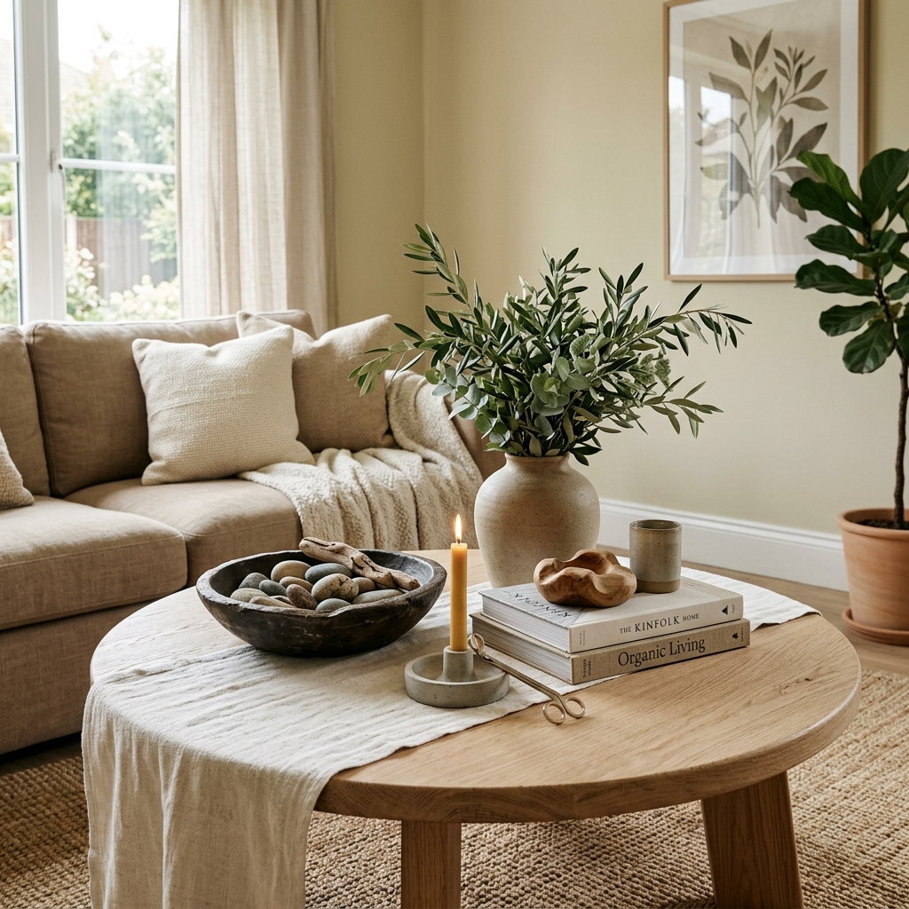

Small Living Room Decor Ideas: 12 Ways to Make a Compact Room Look Bigger
You don’t need more square footage to create an open, luxurious living area — you need smarter design choices. These 12 designer-approved techniques maximize layout, visual flow, natural light, and vertical storage so any compact US apartment feels spacious, airy, and intentional.
The Small Living Room Problem Nobody Talks About
Most small living room advice simply tells you to "declutter" or "paint the room stark white." While well-intentioned, that advice fails to solve the real architectural challenge: how to make a compact, fixed-footprint space feel comfortable and curated rather than restricted.
Real spatial transformation in rented apartments — where knocking down walls, replacing flooring, or altering electrical wiring isn't an option — requires strategic decisions about scale, sightlines, and light distribution. The goal isn't sterile minimalism; it's intentional design where every square foot works harder. For entryway space-saving before entering the living space, see our small apartment entryway organization guide, or explore why some apartments feel expensive regardless of square footage.
💡 Designer Principle: A small room feels cramped when the eye encounters visual dead-ends. When your sightline travels freely beneath furniture, across continuous rugs, and toward vertical light sources, the space reads as twice its physical size.
"In a small living room, every object must justify its presence through either physical utility or exceptional sculptural form. The most spacious rooms aren't the biggest — they're the most cohesive."
— Interior Design Principle · Small-Space Spatial StrategySmall Living Room Rules of Thumb at a Glance
Use these flexible planning guidelines and proportion benchmarks to help arrange a comfortable, functional small living room:
| Design Element | Planning Guideline | Visual & Spatial Benefit | Practical Consideration |
|---|---|---|---|
| Traffic Clearance | 30 to 36 inches where space permits | Maintains an unobstructed, comfortable route between doorways, windows, and main seating | A useful planning target rather than a strict rule; prioritize easy daily circulation over rigid symmetry |
| Seating Silhouette | Raised legs (often 4–7 inches) where suitable | Exposed legs allow light and sightlines to pass beneath the sofa, creating a lighter visual footprint | Not mandatory for every piece; tailored upholstery, clean lines, and compact depth also keep visual weight balanced |
| Area Rug | Sized to room dimensions and seating layout | Resting at least the front legs of seating on the rug visually anchors and unifies the conversation area | Dimensions depend on room size; avoid floating rugs so small that seating pieces feel disconnected |
| Curtain Placement | Mounted higher toward the ceiling line and wider than window trim | Draws the eye upward to create the illusion of vertical height and lets maximum daylight in when drapes are open | A flexible technique; adjust bracket height based on ceiling height, crown molding, and standard panel lengths |
| Statement Mirror | Proportioned to wall scale and furniture placement | Reflects ambient natural light and introduces a sense of depth when placed opposite or adjacent to windows | Size and placement depend on wall dimensions, furniture arrangement, mounting safety, and available daylight |
| Layered Lighting | Combine 2–3 light sources at varied heights (optional warm 2700K–3000K range) | Spreads soft illumination across corners to reduce harsh shadows and create an inviting atmosphere | Bulb warmth is a personal preference; relying solely on a single high-glare ceiling fixture tends to flatten compact spaces |
Layout & Traffic Flow: Float Furniture Off the Walls
The Problem: When faced with a compact footprint, most dwellers instinctively push every sofa, armchair, and bookshelf flat against the drywall ("perimeter lining"). While intended to open the room's center, this creates an awkward, cavernous gap in the middle, highlights the room's rigid boundary lines, and turns the living room into a waiting-room arrangement.
The Practical Solution: Pull your main seating even 3 to 5 inches forward from the back wall. Floating furniture introduces subtle shadow lines and breathing room that trick the eye into perceiving greater depth. Establish a clear, unobstructed 30-to-36-inch primary traffic corridor from the front entrance or hallway directly to windows and seating, ensuring no one has to squeeze sideways past a coffee table.
💡 Renter Layout Hack: In a narrow 11' × 14' apartment living room, floating a 78-inch sofa just 4 inches forward leaves space for an ultra-slim behind-the-couch console table. This gives you a discreet surface for table lamps, book stacks, and device charging without consuming usable walkway space.
⚠️ Common Mistake to Avoid: Pushing a deep chaise sectional into the primary walkway or directly in front of baseboard heaters, which disrupts natural room circulation and makes daily living frustrating.
Furniture Scale & Visible Floor Space: Choose Slender, Exposed Legs
The Problem: Heavy, boxy sofas with fabric skirts, solid block credenzas, and thick upholstered armchairs have immense visual mass. Because their bases sit flush on the floorboards, they block sightlines and act like solid visual barriers, making the floor area feel chopped into tiny fragments.
The Practical Solution: Choose seating and storage pieces elevated on slender, tapered legs (natural wood or matte metal) with 5 to 7 inches of ground clearance. When natural light and eyesight can flow continuously beneath your sofa and accent chairs, the brain automatically interprets the floor plane as broader and unobstructed.
💡 Budget Renter Upgrade: If you already own a comfortable sofa with removable block feet, you don't need to replace the entire piece. Swapping heavy stock legs for a set of 6-inch tapered mid-century wooden replacement legs instantly lightens the silhouette and reveals valuable visible floor space in under 30 minutes.
⚠️ Common Mistake to Avoid: Filling a compact apartment living room with an overstuffed, pillowy microfiber sectional that swallows 70% of the visible floor area. In small rooms, tailored cushions and clean lines always feel more spacious.
Statement Mirrors: Reflect Natural Light and Create Phantom Depth
The Problem: Most compact apartments feature only a single window wall, leaving back corners shadowy and giving the living room an enclosed, tunnel-like feeling during daytime hours.
The Practical Solution: Anchor an oversized statement mirror (minimum 36 to 48 inches tall or wide) on the wall directly opposite or perpendicular to your main window. The mirror acts as a "phantom window," capturing ambient daylight and projecting it into darker recesses while reflecting the open room back to the viewer.
💡 Placement Secret: Position your mirror at sitting eye level (around 56 to 60 inches from the floor to mirror center). This ensures it reflects natural light, artwork, or outdoor greenery rather than ceiling drywall or glare.
⚠️ Common Mistake to Avoid: Hanging a gallery grid of four or five small decorative mirrors. Tiny mirrors chop up reflections into busy visual noise. One single, generous statement piece delivers dramatic architectural depth.

Layered Lighting: Eliminate Overhead Glare with Three-Point Illumination
The Problem: Relying exclusively on a single harsh central ceiling fixture ("the standard apartment boob light") washes out shadows, highlights low ceilings, and casts unflattering downward glare that makes small rooms feel flat and institutional.
The Practical Solution: Establish a three-point lighting triangle at varying elevations: one slender floor lamp at eye level (55–65"), a warm accent lamp on a console or side table (28–36"), and soft uplighting or wall wash. Keep all bulbs within the warm white range (2700K–3000K) to create an inviting, dimensional evening glow.
💡 Renter Space Hack: In tight rooms lacking side table space, an ultra-slender corner floor lamp that casts light directly against the wall creates a diffuse ambient wash that makes the room's boundaries feel expansive.
⚠️ Common Mistake to Avoid: Installing cool white bulbs (4000K–5000K+). Cool daylight bulbs are great for task desks, but in a compact living room they make textiles look washed out and create a sterile, uninviting environment.

Rug Sizing & Placement: Go Oversized to Unify the Seating Zone
The Problem: The single most common decorating blunder in apartments is the "postage stamp" rug: purchasing a 4' × 6' or 5' × 7' rug that floats isolated in the center between the sofa and television. An undersized rug fragments the floor plan, highlights tight square footage, and makes seating pieces look disconnected.
The Practical Solution: Size up. In nearly all small living rooms, an 6' × 9' or 8' × 10' area rug provides the proper architectural foundation. Position the rug so that at minimum the front two legs of your sofa and any accent chairs rest firmly on top of it. The rug should extend 6 to 8 inches past each side of the sofa to visually broaden the room.
💡 The Front-Leg Rule: Anchoring the front legs of all seating pieces on the rug creates an all-inclusive "conversation island." When the rug spans edge-to-edge, the brain registers the living area as a single, expansive zone rather than a cluttered cluster of furniture.
⚠️ Common Mistake to Avoid: Leaving a wide gap of bare flooring between the front sofa feet and the rug edge. If your furniture floats entirely off the rug, the room feels disjointed and visually smaller.
Color & Texture: Build Depth with Tone-on-Tone Neutrals
The Problem: Covering a small living room with high-contrast, multi-colored prints or busy wallpaper creates intense visual clutter. The human eye has nowhere to rest, which makes the perimeter walls feel like they are closing in.
The Practical Solution: Establish a calm tonal foundation using 2 to 3 harmonious neutral shades (creamy ivory, warm oat, soft greige, and deep charcoal accents). Rather than relying on loud colors for interest, build rich visual depth through tactile texture layering: combining slubbed linen, chunky bouclé, ribbed corduroy, and brushed timber.
💡 The Odd-Number Styling Rule: Style your sofa with 3 or 5 pillow covers in varying textures rather than 2 or 4 identical pillows. An odd-numbered grouping looks effortless, curated, and intentionally designed.
⚠️ Common Mistake to Avoid: Mixing three or four conflicting patterns on accent pillows. Stick to solid, rich textures with at most one subtle organic pattern to keep the sofa calm and elegant.

High-and-Wide Curtain Placement: Hang Rods Near the Ceiling
The Problem: Mounting curtain rods directly onto the upper window trim cuts the vertical wall in half. In apartments with standard 8-foot ceilings, this makes the room feel stunted and boxes in the window opening, blocking critical daylight when drapes are pulled to the side.
The Practical Solution: Mount your curtain rod 2 to 3 inches below the ceiling line (or just below crown molding), and extend the rod 8 to 12 inches wider than the window frame on each side. When opened, the drapery panels rest against the drywall rather than covering the window glass, allowing 100% of natural sunlight to flood the room while creating the visual illusion of ceiling-height windows.
💡 Renter Measuring Formula: For standard 8-foot apartment walls, bypass standard 84-inch curtain panels and purchase 96-inch panels. Hang the rod at 94 or 95 inches so the drapery hem lightly kisses or puddles half an inch on the floorboards.
⚠️ Common Mistake to Avoid: "High-water curtains" that float 3 to 6 inches above the floor. Unanchored curtains cut vertical sightlines and instantly make windows look smaller.
Vertical Storage: Free Floor Space with Floating Wall Shelves
The Problem: Low bookcases, storage cubes, and multiple small floor plant pots quickly gobble up walking space. When your floor is crowded with small storage containers, the living room feels chaotic and cramped.
The Practical Solution: Move your storage upward. Installing staggered floating shelves draws the eye toward the upper third of the room, utilizing empty vertical drywall. Complement wall shelves by elevating greenery onto a slender mid-century plant stand (view plant stand) to bring organic foliage to eye level without floor sprawl.
💡 The 30% Negative Space Rule: When styling floating shelves, leave approximately one-third of each shelf completely empty. Negative space gives decorative book stacks and ceramics room to breathe and prevents shelves from reading as clutter.
⚠️ Common Mistake to Avoid: Packing every shelf tight with paperback spines. Stagger horizontal book stacks with small decorative objects and trailing plants for an airy, editorial feel.

Multifunctional Furniture: Choose Versatile, Mobile Storage Pieces
The Problem: Single-purpose, rigid furniture pieces (such as massive permanent coffee tables or heavy stationary credenzas) consume permanent floor space that small spaces simply cannot sacrifice.
The Practical Solution: Invest in hard-working pieces that perform double or triple duty without added bulk. Look for storage ottomans with concealed internal compartments, nesting side tables that slide together when not hosting, or a multi-tier rolling bar cart that serves as an end table during weekdays and rolls into an entertaining station on weekends.
💡 The Mobile Station Advantage: A slim 2- or 3-tier rolling cart with locking casters provides flexible vertical display space for books, glassware, and plants, yet can be wheeled into a closet or kitchen corner when floor space is needed for yoga or guests.
⚠️ Common Mistake to Avoid: Buying bulky convertible furniture with intricate folding mechanisms that are too heavy or frustrating to adjust in daily life. Simple, lightweight modularity wins every time.

Visual Zoning: Define Living and Dining Areas Without Walls
The Problem: In open-concept studio apartments and compact 1-bedroom layouts, the living room, dining nook, and home office often blend into one chaotic, undefined space where no single area feels intentional or restful.
The Practical Solution: Establish distinct visual sub-zones using tactile floor boundaries and furniture orientation rather than physical partition walls. Turn the back of your floating sofa toward the dining or kitchen area to act as an organic room divider. Anchor each zone with its own dedicated lighting (such as an arc lamp over the sofa and a hanging plug-in pendant over the dining table).
💡 Renter Boundary Trick: Place a slim bench or low console behind the floating sofa. This creates a visual stopping point that separates eating from lounging while preserving 100% of open sightlines and cross-room daylight.
⚠️ Common Mistake to Avoid: Setting up solid folding screens or tall, heavy cube bookcases to split a small room. Solid dividers cut off natural window light and make a small open layout feel like two dark, claustrophobic boxes.
Reflective & Metallic Accents: Open Sightlines with Glass & Warm Brass
The Problem: Outfitting a small living room entirely with matte, dark wood and heavy opaque textiles absorbs ambient light like a sponge, making the center of the room feel weighted down and closed in.
The Practical Solution: Introduce materials with light-permeable and reflective qualities: tempered glass coffee table tops, translucent acrylic nesting tables, or polished brass lamp stems and picture frames. Transparent surfaces allow your gaze to travel straight through the furniture to the rug and floorboards below, effectively erasing visual clutter.
💡 The 15% Metallic Ratio: Aim for approximately 15% of your living room accents in warm reflective materials (brushed brass, champagne bronze, or polished glass). This bounces light around the room without tipping into tacky or excessive shine.
⚠️ Common Mistake to Avoid: Overdoing high-gloss mirrored furniture across every surface, which can create dizzying reflections and show every fingerprint. Balanced, warm metal accents paired with matte linen feel timeless and grounded.
Clutter Reduction & The "Rule of Three": Curate Intentional Negative Space
The Problem: Small living rooms tend to swing between two extremes: either every flat surface accumulates daily mail, remotes, and charging cables, or the room is stripped so bare that it feels sterile and inhospitable.
The Practical Solution: Apply intentional decorative containment and the designer's "Rule of Three." Corral daily necessities inside a fluted lidded ceramic box or decorative marble tray. When styling coffee tables and consoles, group three curated objects of contrasting heights (e.g., a stack of two large art books, a sculptural ceramic vase, and a brass candle snuffer) and deliberately leave 50% of the surface bare.
💡 The Visual Breathing Space Test: Stand in your living room doorway and scan each horizontal surface. If your eyes cannot rest on clear, empty tabletop space, remove two items. Empty surface space is the true hallmark of luxury apartment styling.
⚠️ Common Mistake to Avoid: Displaying dozens of tiny novelty trinkets scattered across tables and shelves. In a compact room, one or two substantial, sculptural focal points always look cleaner and more upscale than ten miniature knick-knacks.
You Don't Need a Bigger Apartment — You Need These 12 Design Rules
The most stylish, comfortable small living rooms aren't the ones with the largest square footage. They are the spaces where every piece was chosen with intention — where scale, lighting, mirrors, and uncluttered flow work together to create a calm, luxurious home.
- ✓ Best Layout Move: Float furniture 3–5 inches off walls to establish 30-inch clear walkways
- ✓ Visual Lightness: Choose seating with slender exposed legs to reveal continuous floorboards
- ✓ Maximum Light Bounce: Hang one oversized statement mirror opposite your primary window
- ✓ Atmosphere Control: Layer warm 2700K lighting across three distinct elevations
- ✓ Floor Foundation: Choose an 8' × 10' rug so all front furniture legs anchor securely
- ✓ Calm Sophistication: Stick to tone-on-tone neutrals enriched with bouclé and slub linen textures
- ✓ Ceiling Elevation: Mount drapery rods high near the ceiling and 8–12 inches wider than the frame
- ✓ Floor Reclaim: Move storage up with floating wall shelves and elevated plant stands
- ✓ Smart Function: Use rolling bar carts and storage ottomans that serve multiple roles
- ✓ Open Plan Harmony: Zone living and dining areas using rugs and sofa backs instead of walls
- ✓ Light Permeability: Introduce glass and warm brass accents to keep sightlines clear
- ✓ Curated Rest: Group decor in sets of three and preserve 50% empty surface space
Stop Overthinking — Elevate Your Living Room Today
These are the exact designer-tested upgrades that turn compact apartments into open, high-end living spaces. Explore our verified product picks below to start your transformation.
Shop Featured Products ↓



Frequently Asked Questions — Small Living Room Decor 2026


Neutral Throw Pillow Covers
Layer soft textures to instantly create warmth and a designer aesthetic.
🔥 Verified Quality Choice
👉 View Details


Mid-Century Plant Stand
Add greenery at eye level without cluttering valuable floor space.
🔥 Vertical Space Saver
👉 Shop Now


Smart RGB Floor Lamp
Create cosy, customizable lighting that upgrades your small living room instantly.
🔥 Layered Lighting Essential
👉 See Reviews


Irregular Decorative Mirror
Reflect light and visually expand your small living room or apartment instantly.
🔥 Light Reflection Anchor
👉 View on Amazon


Floating Wall Shelves
Minimal vertical storage — frees your floor and elevates your walls in any apartment.
🔥 Vertical Storage Pick
👉 Check Price


VASAGLE Multi-Tier Bar Cart
Smart mobile storage on casters with reflective glass shelves that serves multiple living functions.
🔥 Multifunctional Essential
👉 View on Amazon